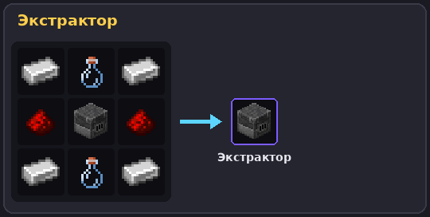
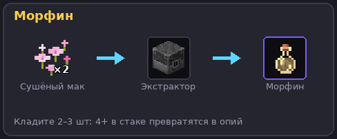
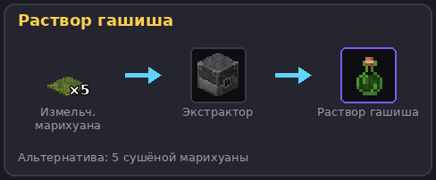
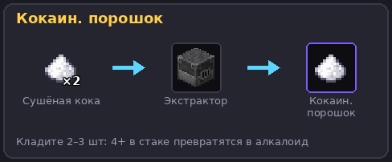
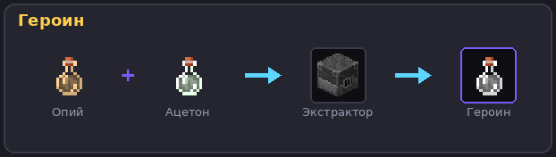

⚗️ Экстрактор
Главная химическая машина: из сушёного сырья делает вещества, шприцы, трубки и промежуточные растворы.
Крафт

В мире выглядит как плавильная печь.
Перед запуском — наденьте хим. костюм!
Без полного комплекта хим. защиты каждое открытие GUI даёт Яд II на 10 секунд. Костюм также добавляет +15% к чистоте. Рецепты костюма.
Как пользоваться
- ПКМ по экстрактору — откроется GUI 6×9.
- Положите ингредиенты во входные слоты (до 8).
- Добавьте воду: клик по иконке «Добавить воду» = −1 ведро из инвентаря, +1 к уровню (макс 8).
- Выберите размер партии (1–8): сколько комплектов ингредиентов спишется за запуск. Вода расходуется по размеру партии (запуск требует
waterLevel >= batchSize). - Держите в инвентаре мерный стаканчик — иначе −5% к чистоте (стаканчик не расходуется).
- Нажмите ЗАПУСК ЭКСТРАКТОРА и подождите ~30 секунд (настраивается
extractor.duration-ticks, по умолчанию 600 тиков). - Заберите продукт из выходной зоны (16 выходных слотов в нижней части GUI).
Чистота результата
| Фактор | Влияние |
|---|---|
| База | 60% |
| Полный хим. костюм | +15% |
| Стерильный блок под машиной | +10% |
| Случайный бонус | +5..+15% |
| Без мерного стаканчика | −5% |
| Средняя чистота входов | ±0.4 за пункт отклонения от 50 |
Максимальная подготовка → стабильные 90%+. Подробности — в Чистоте.
Ключевые рецепты




Все 24 рецепта с картинками — на странице рецептов экстрактора.
⚠️ Важно про количество: рецепты различаются числом предметов. 2 сушёных мака = морфин, а 4 = опий. Кладите ровно столько, сколько в рецепте — лишнее в стаке превратит результат в другой продукт (плагин выбирает наиболее «специфичный» рецепт).
Безопасность
- Вода не вытекает и не теряется.
- Взрыв/поломка дропает машину и всё содержимое.
- Хопперы и поршни не работают.